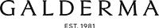

|
 |
 | Препараты, представляемые ГАЛДЕРМА СА (Швейцария) | Организация, уполномоченная принимать 123112, г. Москва, |
| Торговое название | КФГ | Владелец рег. удостоверения |
| БАЗИРОН® АС (BASIRON AC) гель д/наружн. прим. | Препарат для лечения угревой сыпи | зарегистрировано |
| ДИФФЕРИН® (DIFFERIN) гель д/наружн. прим.; крем д/наружного прим. | Препарат для лечения угревой сыпи | зарегистрировано и произведено |
| ЛОЦЕРИЛ® (LOCERYL®) | Противогрибковый препарат для наружного применения | зарегистрировано |
| МИРВАЗО® ДЕРМ (MIRVASO DERM) гель д/наружн. прим. | Селективный альфа2-адреномиметик, применяемый при розацеа | зарегистрировано |
| СЕТАФИЛ ПРО (CETAPHIL® PRO) успокаивающий крем-гель д/душа | Косметическое средство для ухода за сухой и атопичной кожей | зарегистрировано |
| СЕТАФИЛ ПРО (CETAPHIL® PRO) восстанавливающий кожу увлажняющий лосьон | Косметическое средство для ухода за сухой и атопичной кожей | зарегистрировано |
| СЕТАФИЛ ПРО (CETAPHIL® PRO) успокаивающий дневной крем | Косметическое средство для ухода за кожей, склонной к розацеа/покраснениям | зарегистрировано |
| СЕТАФИЛ ПРО (CETAPHIL® PRO) ночной увлажняющий восстанавливающий крем | Косметическое средство для ухода за кожей, склонной к розацеа/покраснениям | зарегистрировано |
| СЕТАФИЛ ПРО (CETAPHIL® PRO) успокаивающая пенка для умывания | Косметическое средство для ухода за кожей, склонной к розацеа/покраснениям | зарегистрировано |
| СЕТАФИЛ ПРО (CETAPHIL® PRO) Матирующая пенка д/умывания | Косметическое средство для ухода за жирной кожей, склонной к акне | зарегистрировано |
| СЕТАФИЛ ПРО (CETAPHIL® PRO) себорегулирующий увлажняющий крем | Косметическое средство для ухода за жирной кожей, склонной к акне | зарегистрировано |
| СОЛАНТРА® (SOLANTRA) крем д/наружного прим. | Препарат для лечения воспалительных поражений кожи при розацеа | зарегистрировано |
| ЭФФЕЗЕЛ® (EFFEZEL) гель д/наружн. прим. | Препарат для лечения угревой сыпи | зарегистрировано |
Copyright © Справочник Видаль «Лекарственные препараты в России», Москва, Россия